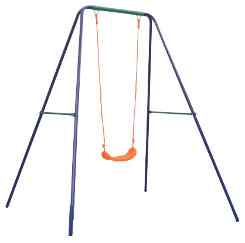
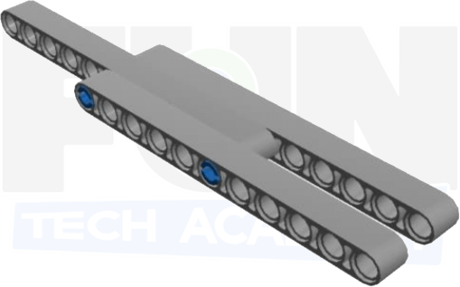
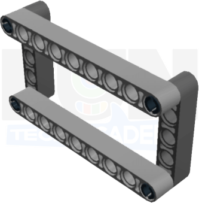
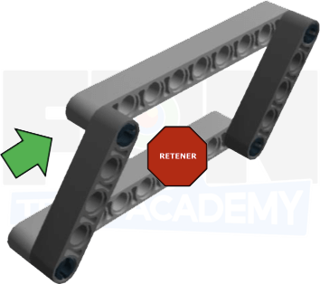
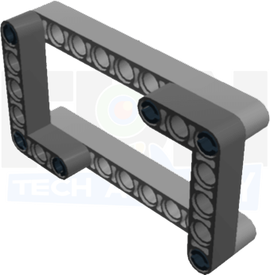
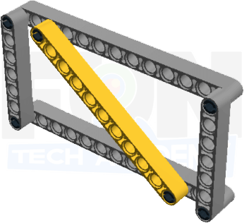

En esta actividad veremos la forma de construir distintas estructuras.
Usando dos pasadores negros con fricción, conecta dos vigas usando los dos orificios de los extremos de cada
viga.
Prueba, sosteniendo los extremos de la viga extendida a volarla suavemente. Puedes ver que la viga está recta
pero todavía tiene algo de flexión.

Usando los mismos dos pasadores negros con fricción, superpon las vigas cinco agujeros.
Prueba, sosteniendo los extremos de la viga extendida, dóblala suavemente. El resultado es una estructura
más rígida.
Nota: Agregar pasadores negros adicionales mantendrá las vigas unidas mejor, pero generalmente no es necesario.
Usando dos pasadores azules largos con fricción, superpon las vigas cinco agujeros. Luego agrega una viga adicional en los pasadores que se extienden. Como resultado tenemos una estructura aún más robusta.

Con las vigas en ángulo también podemos hacer estructuras robustas basándonos en la misma teoría que las vigas extensibles.
Vamos ha hacer un marco estructural con dos vigas de 9, dos vigas de 5 y cuatro clavijas negras como en la imagen.

Vamos a probar la resistencia del marco. Para ello, sostendremos la parte inferior y presionaremos en un lado del marco. ¿Qué pasa con el marco? Se deforma...

Solucionemos el problema. Cambiaremos las vigas de 5 por dos vigas angulares en escuadra (90 grados) de 3x5. Volvemos a probar la resistencia del marco de la misma forma. ¿Qué pasa con el marco? El marco es mucho más resistente.

Tambiém podemos hacer más resistente el la estructura añadiendo una viga de ángulo a ángulo
